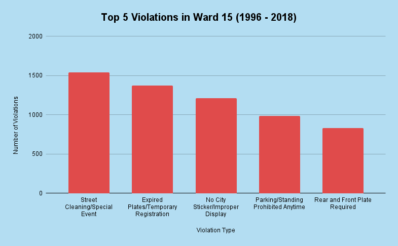

These are the top 5 violation types in ward 15

These are the appeal success rates for the top 5 violation types. Only 4% of people contested their tickets, while 58% of them were successful.
Even if you don't win, often times the act of appealing is enough to get your ticket fine reduced. Also, appealing is free our website has a few resources that allow you to easily appeal, whether it is by mail or in person. Depending on your violation your success rate might even be as high as 75%!
These are the top 5 violation types in ward 15
These are the appeal success rates for the top 5 violation types. Only 4% of people contested their tickets, while 58% of them were successful.